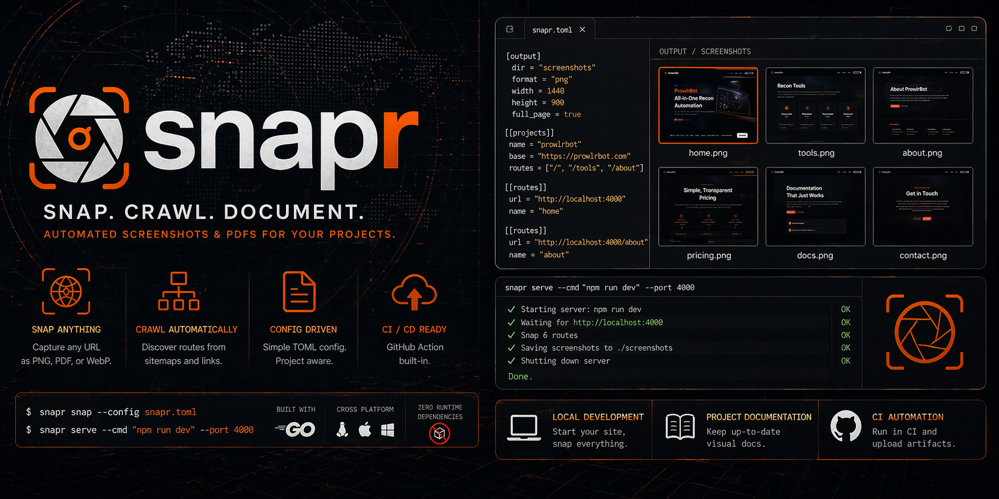

Automated screenshots & PDFs for any web project — local dev, live site, or CI pipeline.
go install github.com/kdairatchi/snapr@latest

From a single URL to a full CI/CD visual regression pipeline in one binary.
Single URL, config file, or live dev server — snapr handles all three entry points with the same output quality.
Discover routes via sitemap or link crawl. Same-origin only. Configurable depth and worker count.
snapr.toml — define named routes, output paths, viewports, and project groups once.
GitHub Action, goreleaser binaries, visual regression diff with --fail-on-diff.
Everything from a quick one-off capture to a full visual regression pipeline.
Requires Chrome or Chromium on the host machine.
One step adds screenshot capture to any workflow. The action installs the binary, verifies the sha256 checksum, and puts snapr on $PATH automatically.
gowitness is a great recon tool. snapr is built for project documentation and CI/CD visual regression.
| Feature | snapr | gowitness |
|---|---|---|
| Screenshot capture | ✓ | ✓ |
| PDF output | ✓ | — |
Dev server lifecycle (snapr serve) |
✓ | — |
| Pixel-diff visual regression | ✓ | — |
| Self-contained HTML gallery | ✓ | — |
| Multi-viewport capture | ✓ | — |
| GitHub Action | ✓ | — |
| snapr.toml config | ✓ | — |
| Bulk recon / large URL lists | — | ✓ |